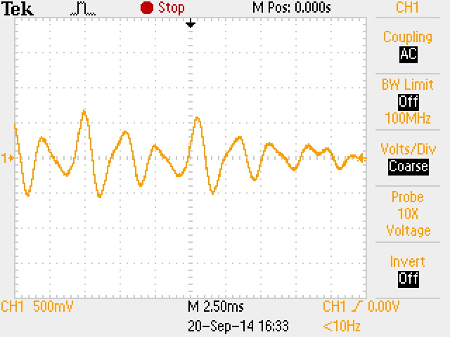

Side labor 1 Telefoni analoogliides aruanne
| Töö tegijate nimed: |
| Andrei Reinus, Väino Kokk |
| Töö tegemise kuupäev: Sat Sep 20 14:58:10 2014 |
1. Analoogliidese parameetrite mõõtmine
| Terminalseadme seisund |
U1 [V] |
U2 [V] |
U3 [V] |
| Rahuseisund |
55,2 |
55,1 |
0 |
| Hõiveseisund |
10,8 |
8,2 |
2,6 |
Valimistooni kestus: 5-6 s.
Aruande vormistamisel tuleb teha arvutused:
Leida vool, mis läbib terminalseadet tema mõlemates seisundites ja selgitada tulemusi.
Arvutada telefoniaparaadi takistus ja telefoniliini takistus.
2.1 Valimistooni parameetrite mõõtmine
| Valimistoon |
|
| Pinge amplituud |
720 mV |
| periood |
2.180 ms |
| sagedus |
458,7 Hz |
2.2 Kõne uurimine
2.2.1 Vile
| Vile |
Signaalipilt |
Spektripilt |
| Pinge amplituud |
2,2 V |
|
|
| Periood |
1,000 ms |
| Sagedus |
1 kHz |
2.2.2 Vokaal
| Vokaal |
Signaalpilt |
Spektripilt |
| Pinge amplituud (kõige suurem) |
1,26 V |
 |
|
| Periood (kõige pikem) |
3,000 ms |
| Periood (kõige lühem) |
1,400 ms |
| Sagedus (kõige madalam) |
357,1 Hz |
| Sagedus (kõige kõrgem) |
769,2 Hz |
2.3 Kutsesignaali uurimine
| Kutsesignaal |
|
| Pinge amplituud |
218 V |
| periood |
40.00 ms |
| sagedus |
25 Hz |
2.4 Toonvalimine
| Toonvalimine |
|
|
| valitud number |
2 |
5 |
| jooniselt leitud esimene sagedus |
700 Hz |
772 Hz |
| jooniselt leitud teine sagedus |
1,34 kHz |
1,34 kHz |
| tehtud järeldus järgnevast tabelist |
mõõdetud tulemused on teoreetiliste lähedal |
mõõdetud tulemused on teoreetiliste lähedal |
Kokkuvõte ja järeldused
Õppisime tundma analoogtelefoni erinevaid töörezhiime ("toru hargil", "toru võetud") ja nendele rezhiimidele vastavaid signaale. Saime aru, et valel ajal valesid juhtmeid ei tasu käppida– võib tervisele kahjulikult mõjuda.